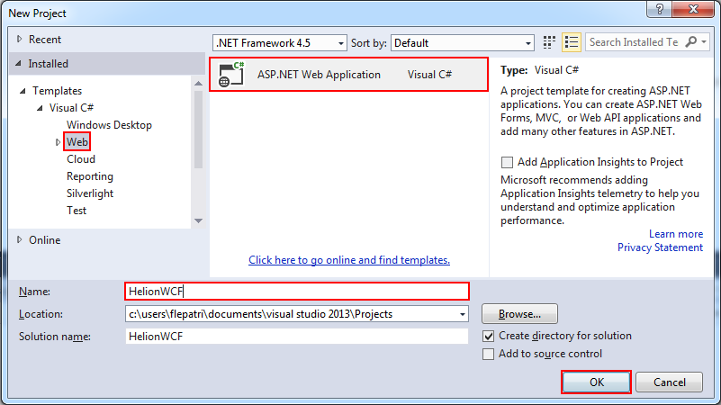
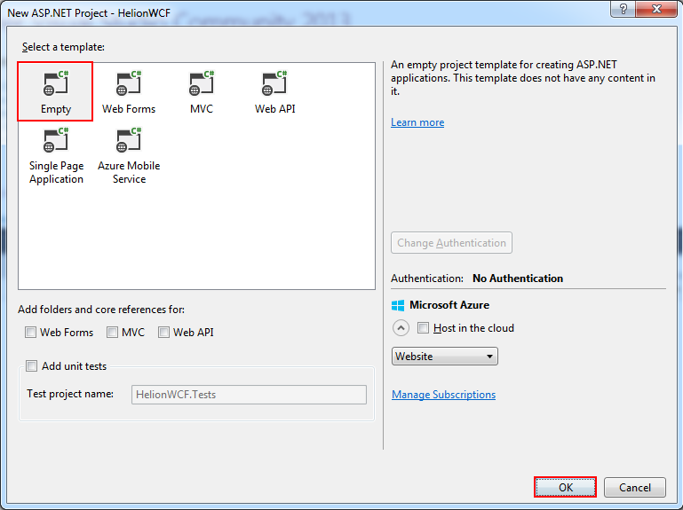
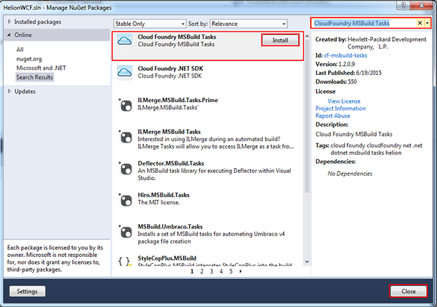
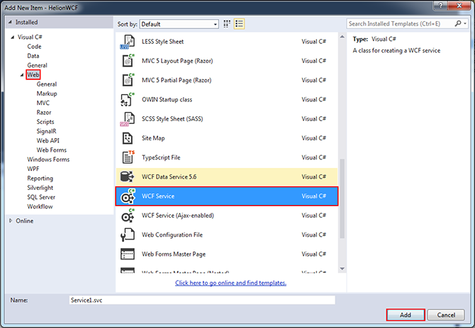
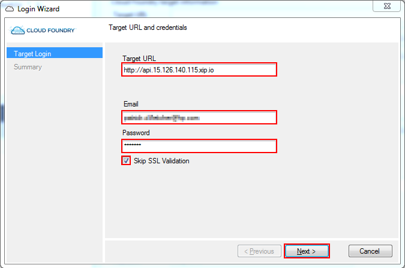
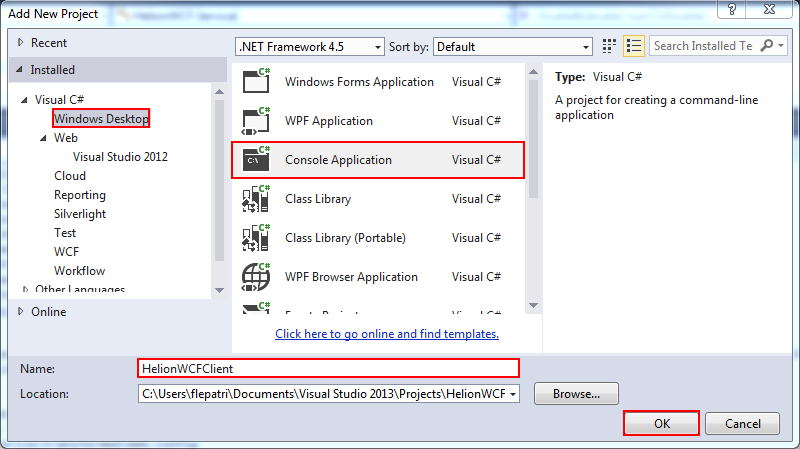
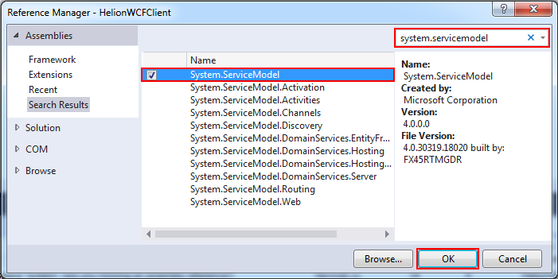
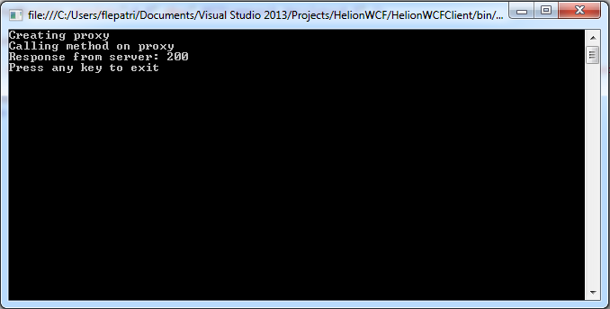

Windows, .NET, SQL Server, and IIS are either registered trademarks or
trademarks of Microsoft Corporation in the United States and/or other countries.
This topic describes how to deploy a basic Windows Communication Foundation (WCF) service.
For the purposes of this tutorial, you will create and deploy a WCF web service with one
method, and create a basic client application to test the service.
This topic contains
the following sections:
Prerequisites
This tutorial requires the following:
Creating the web service application
In this section, you'll create a Web application and add a WCF service.
Note: The Cloud Foundry MSBuild tasks only support deploying a Web Application or a Web Site; other application types, such as WCF, are not supported.
- Open Visual Studio 2013. Select File, New...
- In the Templates pane, select the Visual C# node, and select Web. Select ASP.NET Web Application, name the project HelionWCF, and click OK.

- In the New ASP.NET Project window, select the Empty template and click OK.

- Right-click the solution and select Manage NuGet Packages for Solution.... Search online for CloudFoundry MSBuild Tasks, and click Install in the
Cloud Foundry Build Tasks item. Click Close.

- In Solution Explorer, right-click the HelionWCF project and select Add..., New Item.
- Select Web in the left pane if it isn't selected already. Scroll down the middle pane and select WCF Service. Click OK.

- Change the contents of IService1.cs (the service interface definition) to the following:
using System.ServiceModel;
namespace HelionWCF
{
[ServiceContract]
public interface IService1
{
[OperationContract]
double DoubleIt(double numToDouble);
}
}
- Change the contents of Service1.svc.cs to the following:
namespace HelionWCF
{
public class Service1 : IService1
{
public double DoubleIt(double numToDouble)
{
return numToDouble * 2;
}
}
}
Deploying the web service application
Now that you've created a WCF service hosted in a Web application, you'll deploy the application.
For this section of the tutorial, you'll need the connection information for a Windows DEA
cluster running on a Public Cloud account. For information on creating a Windows DEA node on
Public Cloud, see Building and deploying your first
Windows application.
- Right-click on the project in Solution Explorer and select Publish to Cloud Foundry.
- In the Publish to Cloud Foundry dialog, click the ... button in the Target URL line.
- Provide your access credentials for your Windows DEA node. Select Skip SSL validation (required for Helion Public Cloud). Click OK.

- In the Publish to Cloud Foundry dialog, enter HelionWCF for the Route. This value, along with the URL of the cluster, will determine the URL of the application. Select Publish.
- To monitor the publish progress, select View, Output.
Creating and running the test client
Now that you've developed a WCF service and deployed it to a Helion installation, you'll create a basic console application to test it. You'll use
svcutil.exe to create a proxy, then use the proxy to call the web service from the client application.
- Right-click the solution in Solution Explorer. Select Add, New Project. In the Templates pane, select the Visual C# node, select Console Application, name the project HelionWCFClient, and click OK.

- In Solution Explorer, right-click the HelionWCFClient project, and select Add, Reference. In the Add Reference dialog, search for System.ServiceModel,
and select the checkbox next to System.ServiceModel in the results to add it to the project. Click OK.

- Next, you'll use Svcutil.exe to generate a proxy. Open a Visual Studio 2013 Developer Command Prompt. This is usually found in the Start menu under Visual Studio 2013, Visual Studio Tools.
- In the command prompt, navigate to the home directory for the client project you just created. By default, this is C:\Users\<username>\Documents\Visual Studio 2013\Projects\HelionWCF\HelionWCFClient.
- Enter the following command, substituting the address of your Windows DEA cluster:
svcutil http://helionwcf.15.126.140.115.xip.io/service1.svc
The svcutil.exe tool will access your running web service and generate a file called Service1.cs.
- In Visual Studio, in Solution Explorer, right-click the HelionWCFClient project, and select Add, Existing Item. Select Service1.cs and click Add.
- In Solution Explorer, under the HelionWCFClient project, open App.config. Replace the contents of the file with the following, replacing the endpoint address
with that of your Windows DEA node:
<?xml version="1.0" encoding="utf-8" ?>
<configuration>
<startup>
<supportedRuntime version="v4.0" sku=".NETFramework,Version=v4.5" />
</startup>
<system.serviceModel>
<client>
<endpoint address="http://helionwcf.15.126.140.115.xip.io/service1.svc" binding="basicHttpBinding" contract="IService1"/>
</client>
</system.serviceModel>
</configuration>
- In Solution Explorer, under the HelionWCFClient project, open Program.cs. Replace the contents of the file with the following:
using System;
namespace HelionWCFClient
{
class Program
{
static void Main(string[] args)
{
Console.WriteLine("Creating proxy");
var client = new Service1Client();
var input = 100D;
Console.WriteLine("Calling method on proxy");
var output = client.DoubleIt(input);
Console.WriteLine("Response from server: {0}", output);
Console.WriteLine("Press any key to exit");
Console.ReadKey();
}
}
}
- In Solution Explorer, right-click the HelionWCFClient project and select Set as StartUp Project.
- Run the application (F5). The output will look like the following:
